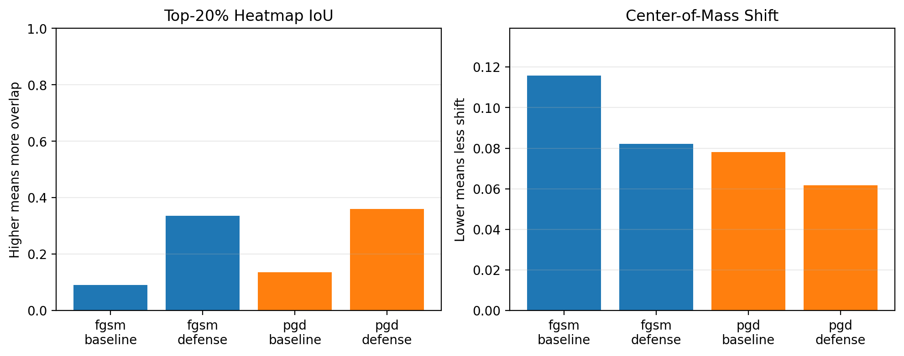

Live Scenario
Standard detector scans a malware image.
The demo begins with a real curated test example from the finalized duplicate-aware evaluation split.
1
Clean Detection
The sample starts as a malware image. The standard detector correctly identifies its family before any attack.
- True malware family
- -
- Standard detector
- -
- Confidence
- -
2
Attack Launched
The evasion attack adds a small, targeted perturbation designed to confuse the classifier.
3
Detector Fooled
The standard detector now predicts the wrong malware family, showing why clean accuracy alone is not enough.
Standard detector after attack
-
-
4
MalGuard Defense Activated
MalGuard uses the adversarially trained MobileNetV3 detector instead of the standard detector.
MalGuard robust detector
-
5
Correct Prediction Recovered
The key question: after the attack, does the robust detector recover the true malware family?
-
6
Attention Stability Lens
Grad-CAM is the product's attention-stability lens. It checks whether the model keeps focusing on similar regions after an attack instead of only reporting a class label.
Mean Top-20% attention overlap between clean and attacked inputs.
Higher overlap suggests more stable attention on the curated evidence set.
The evidence strengthens the robustness story without claiming semantic understanding.
Advanced attention metrics
| Model | Top-20% IoU | Center shift |
|---|
E
Proof From Finalized Evaluation
The final MalGuard-X model achieves above 80% accuracy and macro F1 under FGSM, PGD-20, and PGD-50.
Technical evidence table
| Metric | Standard | MalGuard | Change |
|---|
